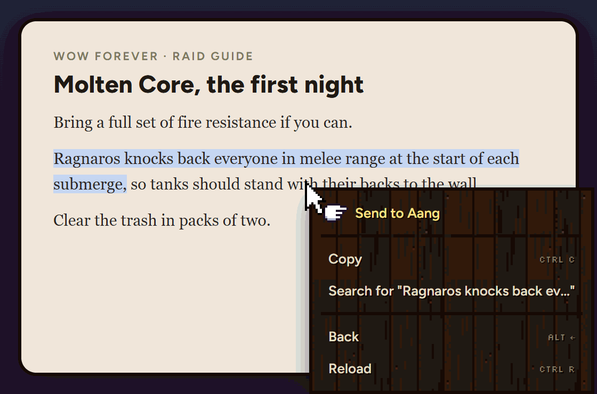
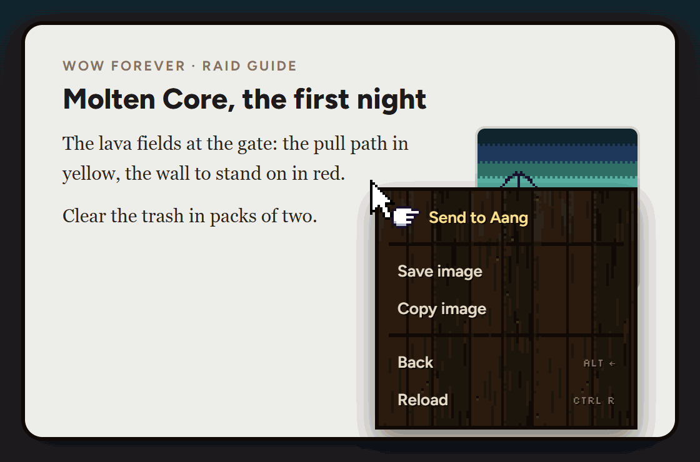
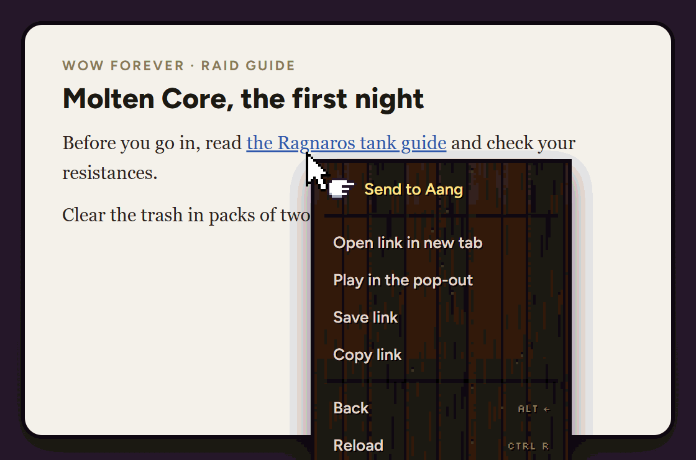
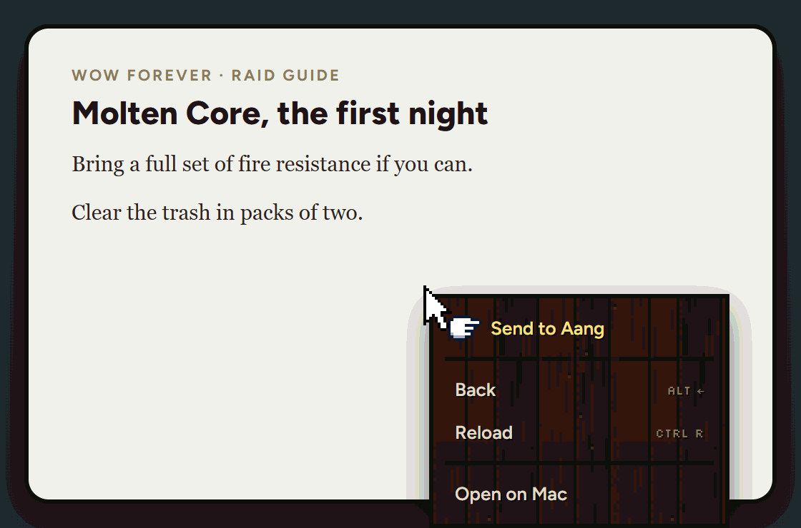
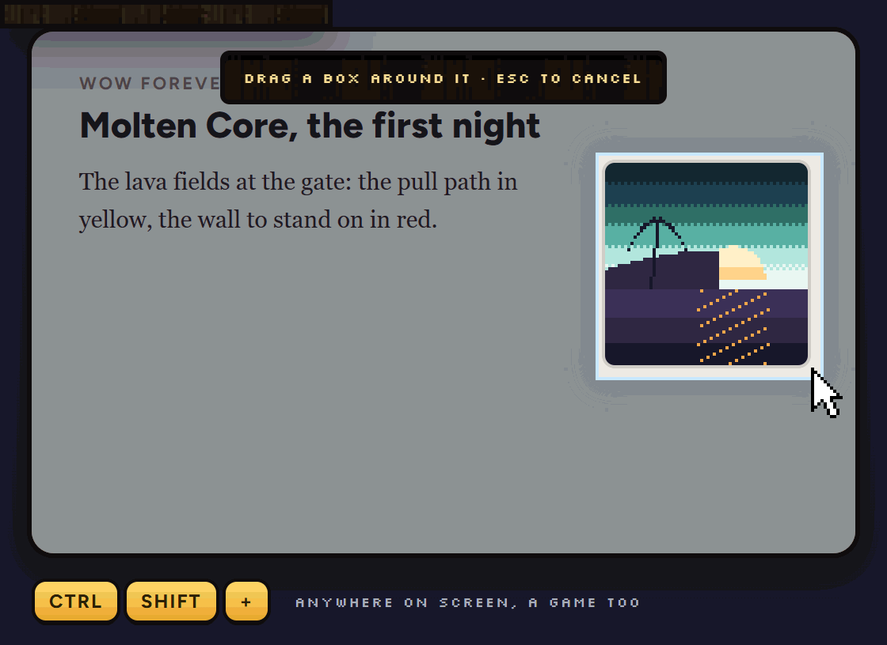
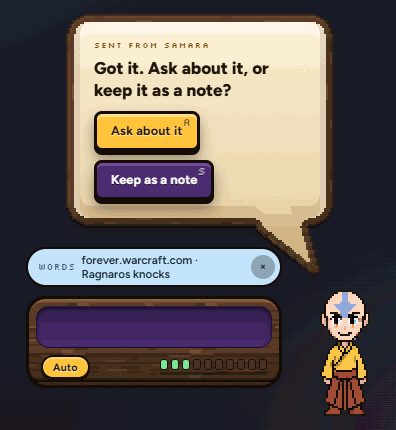
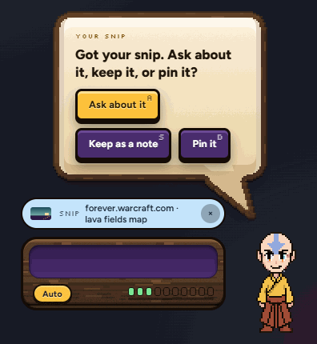
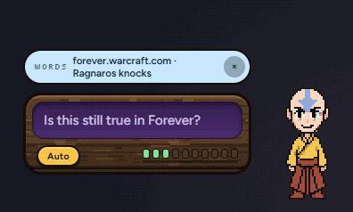
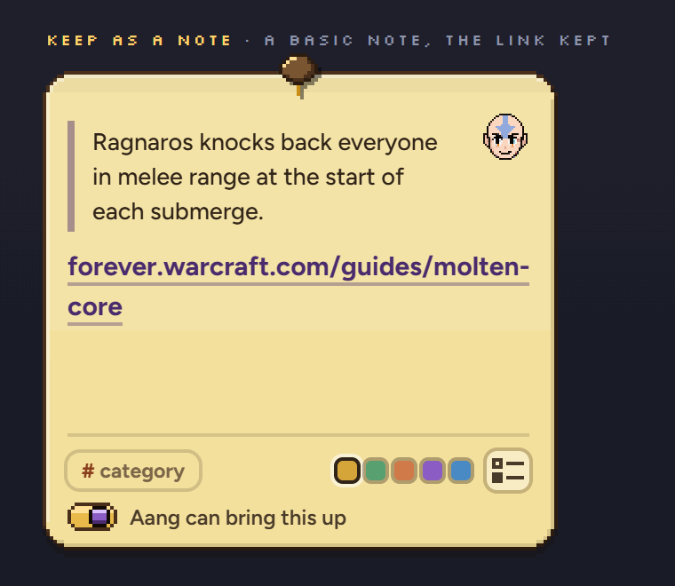
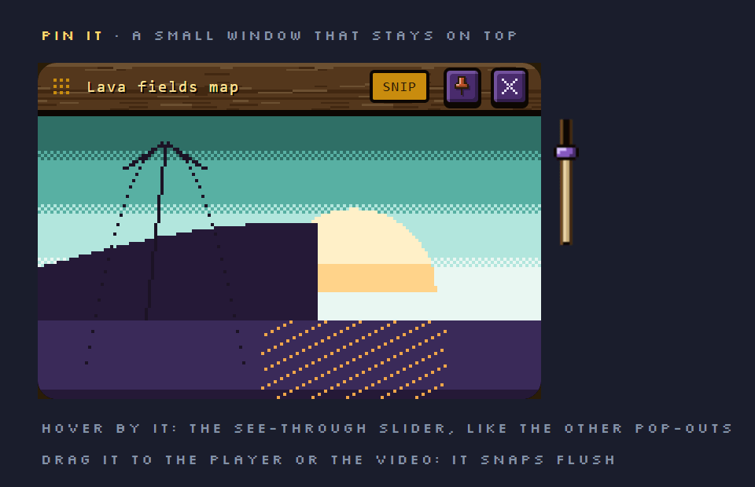

v1 · 22 Oct · one action instead of clip-to-notes, Send to Aang and the snip card
Whatever you right-click in Samara (highlighted words, a picture, a link, or the page itself) has the same first item: Send to Aang. The snip key lands the same way. Everything goes to one place: a chip in Aang's typing box, and one line from him with two keys.
One item, the same in every menu, always at the topSnip lands the same wayPin a snip: yesNo pop-ups
WHAT TO PICKDoes this one flow feel right? And is there anything to add to the menu (or take out)?
1FIVE WAYS IN
Samara's real right-click menu. Send to Aang sits at the top of every one of them, with the menu's own line under it, so your hand learns one spot. Today it only shows for highlighted words, in the middle.
1HIGHLIGHTED WORDS

2A PICTURE

3A LINK

4THE PAGE (EMPTY SPACE)

5THE SNIP KEY

All five land in one place
2WHERE IT LANDS
A chip appears in his typing box (what you sent, with the site it came from), and Aang asks one line. Two keys: Ask about it puts your cursor in the box to type a question, Keep as a note makes a plain note with the link. A snip gets a third key, Pin it. These are his real bubble and his real typing box.
✦WORDS, A PICTURE, A LINK OR A PAGE · REAL SIZE

✦A SNIP · ONE MORE KEY

3WHAT EACH KEY DOES
AASK ABOUT IT · YOU TYPE, THE CHIP GOES WITH IT

SKEEP AS A NOTE · SHOWN 2×

DPIN IT (SNIPS) · SHOWN 2×

?WHAT EACH PART DOES
Send to AangThe first item in every Samara right-click menu. It sends what you clicked: the words, the picture, the link, or the whole page if you clicked empty space.The snip keyCtrl + Shift + Plus, anywhere, a game too. Draw a box; it lands the same way. The old corner card (Send / Bin it) goes.The chipWhat you sent and the site, above the typing box. The × takes it off.Ask about itThe cursor goes in the box; type your question and the chip goes with it.Keep as a noteA plain note in the default colour with the link it came from. Add a # category if you want one. Samara's notes key then shows it on that site (sheet 60).Pin itSnips only. A small solid window that stays on top, part of the pop-out family: the same pin, the same see-through, snaps flush.Not drawnTab peek: you said no.
How these were made
The menus are Samara's real page menu (its own styles and script), given the items in the new order. The pages behind them are made up.
The snip is Snipit's real overlay styles. The bubble and the typing box are the app's real pages; only the key words and the chip's words are new.
The note is sheet 60's note. The pinned snip is the video pop-out's own window with the job pop-out's pin; the picture in it is made up.